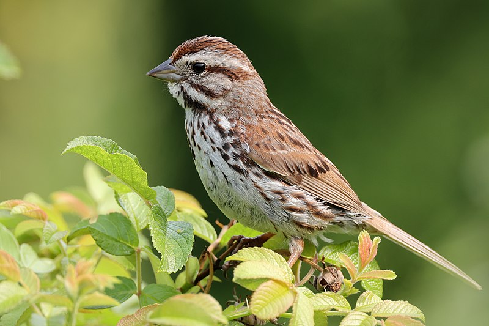
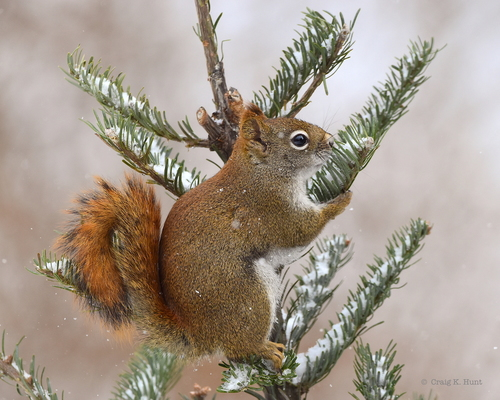
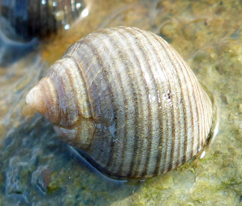
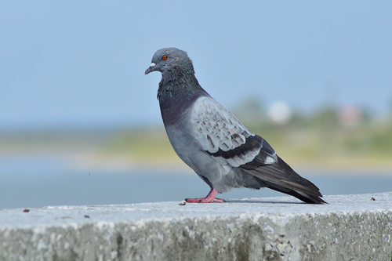

Image by Cephas
{kind=link}
Image by Craig K. Hunt

Image by Paolo Mazzei
Image by Robin Gwen Agarwal
Image by Константин Самодуров
| Picture | Name | Description |
|---|---|---|
|  | Song Sparrow (Melospiza melodia) | The song sparrow (Melospiza melodia) is a medium-sized New World sparrow. Among the native sparrows in North America, it is easily one of the most abundant, variable and adaptable species. Adult song sparrows have brown upperparts with dark streaks on the back and are white underneath with dark streaking and a dark brown spot in the middle of the breast. They have a brown cap and a long brown rounded tail. Their face is gray with a brown streak through each eye. Image by Cephas |
|  | American red squirrel (Tamiasciurus hudsonicus) | The American red squirrel (Tamiasciurus hudsonicus) is one of three species of tree squirrels currently classified in the genus Tamiasciurus, known as the pine squirrels (the others are the Douglas squirrel, T. douglasii, and the southwestern red squirrel, T. fremonti). The American red squirrel is variously known as the pine squirrel or piney squirrel, North American red squirrel, chickaree, boomer, or simply red squirrel. Image by Craig K. Hunt |
|
American red squirrel (Tamiasciurus hudsonicus) | Harmonia axyridis is a large lady beetle or ladybug species that is most commonly known as the harlequin, Asian, or multicoloured asian lady beetle. This is one of the most variable species in the world, with an exceptionally wide range of colour forms. It is native to eastern Asia, but has been artificially introduced to North America and Europe to control aphids and scale insects. It is now common, well known, and spreading in those regions, and has also established in Africa and widely across South America. This species is conspicuous in North America, where it may locally be known as the Halloween beetle, as it often invades homes during October to overwinter. Image by Paolo Mazzei |
|  | Common Periwinkle (Littorina littorea) | The common periwinkle or winkle (Littorina littorea) is a species of small edible whelk or sea snail, a marine gastropod mollusc that has gills and an operculum, and is classified within the family Littorinidae, the periwinkles. This is a robust intertidal species with a dark and sometimes banded shell. It is native to the rocky shores of the northeastern, and introduced to the northwestern, Atlantic Ocean. Image by Robin Gwen Agarwal |
|  | Rock Pigeon (Columba livia) | The rock dove, rock pigeon, or common pigeon is a member of the bird family Columbidae. In common usage, it is often simply referred to as the "pigeon". Wild rock doves are pale grey with two black bars on each wing, whereas domestic and feral pigeons vary in colour and pattern. Few differences are seen between males and females. The species is generally monogamous, with two squabs (young) per brood. Both parents care for the young for a time. Image by Константин Самодуров |